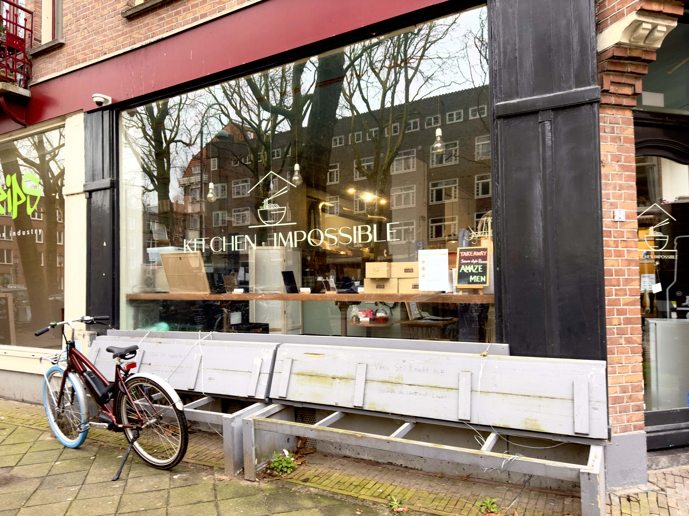

Kitchen Impossible.
Kitchen Impossible wilt de wereld een betere plek maken met hun vegan Ramen en doet het onmogelijke door alles plant based te maken.
Het is een klein restaurantje met een fijne en knusse sfeer. Ze nemen geen reserveringen aan, dus is het een goed idee om langs te komen als je in de buurt bent met één of twee anderen, maar niet met een te grote groep.